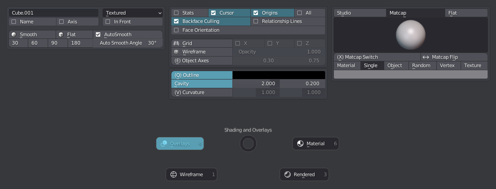
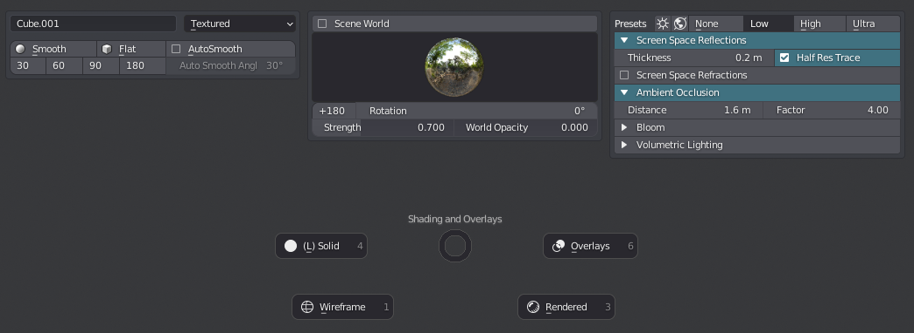
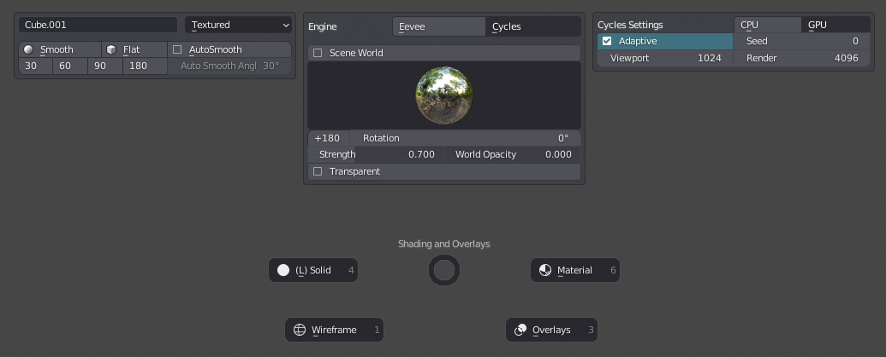
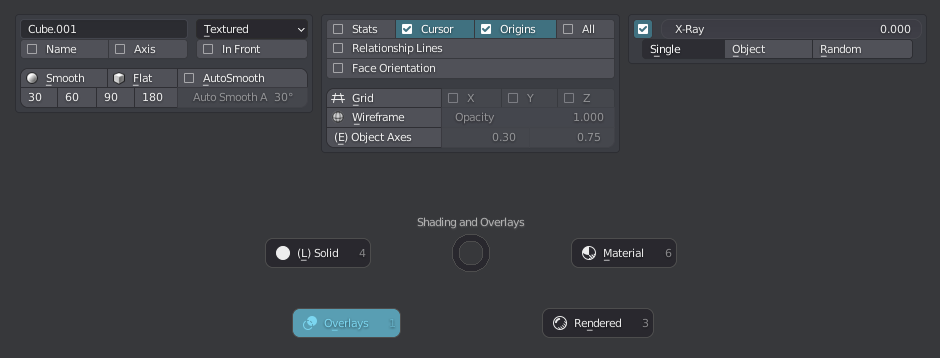
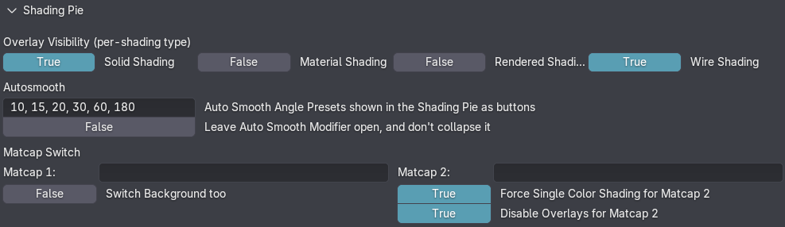

Shading Pie
shortcut Page Up
Note
This default shortcut may seem odd, given how frequently the pie is used.
But if you can access Page Up using your mouse, it makes a lot of sense.
The Shading Pie is one of the most powerful and most used menus in MACHIN3tools.
It allows you to toggle all kinds of shading (viewport and object based) and overlay settings, without having to search for them in menus at the border of the view port, or in the properties panel.
Furthermore it facilitates quick shading type switching. Of note here, is that the pie supports overlay toggling per shading type, which means you can have overlays enabled for Solid shading, and have them automatically disabled, when switching to Material shading for instance.
Solid Shading
 shading pie in solid shading, with overlays enabled
Material Shading
 shading pie in eevee powered material shading, with overlays disabled
Note
The shading pie allows you to adjust Eevee settings (see above) in Material shading, even when Cycles is set as the render engine, which is otherwise not possible natively in Blender.
Rendered Shading
 shading pie in rendered shading, with overlays disabled, and the render engine set to cycles
With Cycles as the Renderer the pie allows toggling of an object's shadow caster and holdout props.
 Shadow Catcher toggle for Active Object in Cycles box of the Shading Pie
Shadow Catcher toggle for Active Object in Cycles box of the Shading Pie
Wire Shading
 shading pie in wire shading, with overlays enabled
Preferences
The shading pie exposes a few preferences. In particular for the Overlay toggling behavior, the Autosmooth tool, the Matcap Switch tool.

Tools
- Shade Smooth in object and edit modes, optionally utilizing the Autosmooth angle + setting sharps based on it
- Shade Flat in object and edit modes, optionally clearing all sharps
- Autosmooth Angle Presets
- Toggle Grid
- Toggle Wireframe, globally as an overlay, or per object, or in edit mode using XRay to mirror 2.79s wire mode behavior, useful to select through
- Toggle Object Axes
- Toggle Cursor Axes
- Toggle Outline
- Toggle Cavity
- Toggle Curvature
- Toggle Overlays
Also:
- Matcap Switch - cycle between two predetermined matcaps
- Colorize Materials - set material viewport colors from last node in material
- Colorize from Active - set object viewport colors from active object
- Colorize from Materials - set object viewport colors from material
- Colorize from Collections - set object viewport colors based on collections
- Colorize from Groups - set object viewport colors based on groups
As well as:
- 180° Studio Light Rotation
- Eevee Presets
- Bevel Shader toggle - in Rendered Shading
Autosmooth
As of Blender 4.1, Autosmooth is no longer a mere mesh property, but instead a Modifier.
I think this change is very welcome, as it gets rid of some odd legacy Blender behavior.
The Shading Pie and its Shade Smooth, Shade Flat and AutoSmooth tools fully support this change and the UX is unchanged compared to previous versions.
Autosmooth remains a toggle in the pie, just as if it still were a boolean property.
 Autosmooth in 4.1+ looks and behaves identical to how it worked in previous Blender versions
Autosmooth in 4.1+ looks and behaves identical to how it worked in previous Blender versions
Under the hood, instead of toggling the mesh.use_auto_snmooth property, MACHIN3tools will add or remove the new geo node Smooth by Angle modifier to enable or disable Auto Smooth.
MACHIN3tools will automatically add/remove the mod on unselected-but-instanced objects too.
Note
Note that the Auto Smooth mod should be kept at or towards the the end of the stack. When MACHIN3tools adds the mod, it will be added at the end, but before any Mirror or Array mods, that may be at the end already. So far this seems like a good general solution. Inevitably we'll probably see use cases, where we may have to manually adjust its position though.
Personally, I like that you no longer even need to use AutoSmooth for sharp edges to be considered, and neither when using custom normals. Both just work, as you would expect on any smooth shaded mesh object. Beyond that, I like that we can auto-smooth CURVE objects now, and that it plays well with boolean mods on objects with custom normals, which previously would have their shading messed up.
Keep in mind
Addons like HardOps, BoxCutter or HyperCursorin pre-release on Patreon, tend do do their own modifier sorting, which can be very useful and avoids having to micro-manage modifier stack order.
Using the Shading Pie
Blender 4.2 introduced a new version of Eevee called Eevee Next, which brings realtime raytracing, and along with that a completely different way to set things up and tweak it all.
The Material Shading parts of the Shading Pie were updated accordingly.

As in previous version you can quickly adjust the Eevee settings (which are used in MATERIAL shading too), even when your render engine is set to Cycles. Also as before you have preset buttons at the top of the Eevee box, that allow you to quickly change multiple settings at once. Refer to the tooltips for details.
New in Blender 4.2 are user-presets, which can be set from the Properties editor in the Raytracing panel. If you set some of these up for yourself, the Shading Pie will find and expose them for you.

Now, your first reaction to this Eevee Next panel may be being overwhelmed, but I assure you it's easier and more efficient than the alternative. The only things you will want to adjust in 99% of the cases are 1. the presets and 2. the thickness value, which is why I chose to highlight it in red.
Also, if you look at it with the None preset chosen you will see it's not so bad :)

To make life easier, I have combined 6 settings into 3 "multi-props". Adjusting Thickness, Resolution, or Precision (Quality) will adjust the natively independent Screen-Trace and Fast GI settings of the same name at the same time.
For example, changing resolution from 1:2 to 1:4, will change both the Screen-Trace resolution and the Fast GI resolution accordingly.
I've also exposed the Shadow and AO passes directly for quick access. Shadow in particular can be very cool to get a very graphic visual read of a scene or design.
Bloom
Eevee Next no longer has a Bloom toggle. But the Shading Pie still does!
In Blender 4.2, the Bloom toggle of the Shading Pie will set up Bloom via the compositor for you, or toggle it, if it has been set up already. I've thrown in a Dispersion toggle on top of it too. What's cool is, not only are these effects shown and adjustable in realtime, they also work just the same in Cycles!
Volumes
Similarly, there is no Volume toggle in native Blender, but there is on in the Shading Pie!
It does two things, because volumes exist in either of 2 ways:
- a global world volume set up by nodes in your world
- volume objects
Without volume objects being present, turning on Volume rendering will setup a basic world volume for you, and expose some basic settings in the pie. With volume objects being present, their visibility will be toggled by adjusting viewport filtering. This way individual object visibility states are never touched and changed.
If you have volume objects present, but in addition you also want to add a world volume, you can do so by SHIFT clicking on the volume toggle.
World
More World properties are being exposed now.
Blender 4.2 introduced the ability to toggle world shadows, so shadows dynamically created from HDRIs! Cool. You can even soften them by increasing the Sun Angle (size).
Also, if you use the scene world, MACHIN3tools will check your world node setup and look for a number of generic property names, such as Rotation or Rotation Z, which - if found - allows you to rotate your world directly from the pie. Also also, if you use the EasyHDRI addon, then know that its node groups are supported too.
Recursive Smoothing and Bevel Shader
DECALmachine
The BevelShader toggle supports Panel Decals of DECALmachine.
Conveniently, adjusting the bevel width on the panel decal's parent object, will then automatically set it for separate panel decal object as well.
 Bevel Shader on DECALmachine's panel decals, with different per-object width modulations
Bevel Shader on DECALmachine's panel decals, with different per-object width modulations